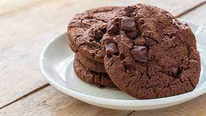

Recipe for chocolate cookies
This is a recipe for baking super tasty chocolate cookies

Ingredients
- 30 gr of cocoa powder
- 125 gr of sugar
- 300 gr of wheat flour
- 5 gr of yeast
- 250 gr of butter
Recipe
- Melt the butter in the microwave for one minute.
- Put the melted butter into the bowl, add sugar and stir until you get an homogeneous mixture.
- Turn the oven to the minimum
- Add the cocoa powder and keep stirring
- Add the flour and keep stirring, make sure not the leave any lumps. The dough must be solid in order to make the cookies, if it is not, keep adding flour until it is
- Butter the tray and place the cookie dough, squash the dough to give them their form
- Bake them in the oven at 180º degrees during 20 minutes or until they are baked, to make sure they are baked, you can use a fork to check if they are humid or not, if they are, keep baking
- Once they are baked, leave them to cool for 15 minutes
- Lets eat!